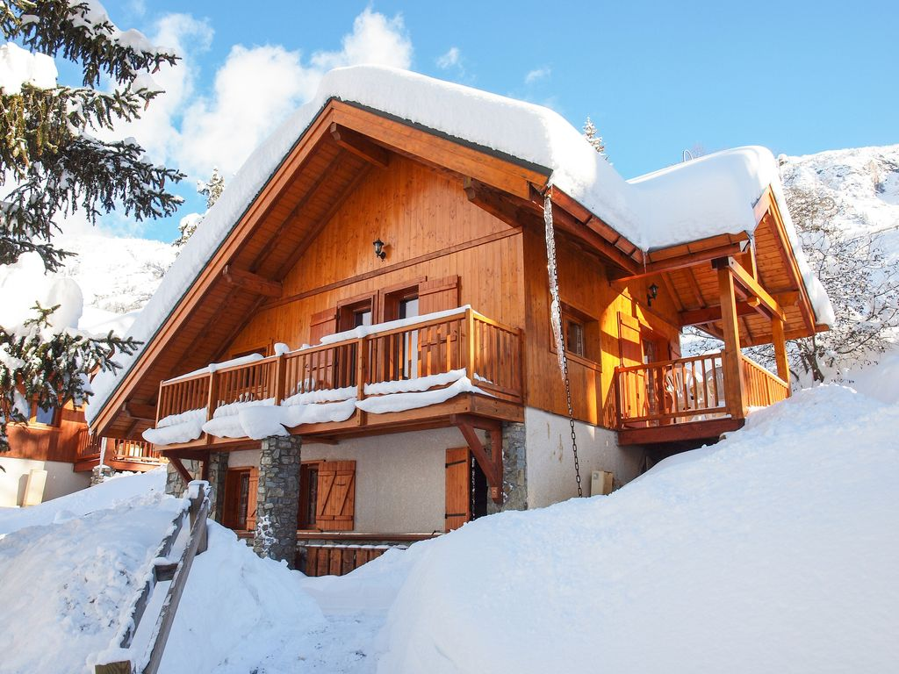

At Aurora Ski Chalet, we aim to provide you a unique experience in order to give you a memorable journey here in Norway. We are uniquely located to view the Northern Lights as easily as possible. The best times to view the Lights tend to be between 10 p.m. and 2 a.m. As such, we will have a guide to come with you to view the Lights securely and safely.
In the surrounding area, there is plenty of space to go skiing. There's even a Ski Jump Centre nearby if you're feeling particularly brave! For our chalet, we can sleep up to 15 people. 3 meals are provided for our guests, as well as TV and Wi-fi.
All in all, we hope to give you the feeling of a home away from home. Adventure in the day, and cosy up in the night! For more information, head to our FAQ and Contact pages. We hope to see you soon!